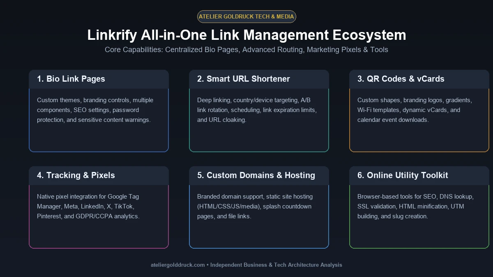
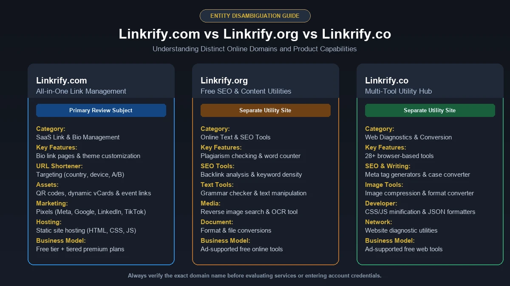

If you create content, promote a business, manage social media, or simply have more online destinations than you can fit into a social-media bio, you have probably run into the same problem: too many links and not enough places to put them.
That is the basic problem Linkrify is designed to solve.
Linkrify is a digital link-management platform that brings several functions together, including bio link pages, shortened URLs, QR codes, custom domains, file links, vCards, event links, static-site hosting, tracking pixels, and link analytics. Its official website also presents a collection of online utility tools for SEO, text, conversion, development, image processing, and other tasks.
But there is an important detail that often gets missed when people search for Linkrify.
The name is used by more than one website.
So before looking at features, it is worth understanding exactly which Linkrify you are dealing with.
What Is Linkrify?
Linkrify.com is an all-in-one link management and bio-link platform designed to help creators, marketers, businesses, and brands organize multiple online destinations through a centralized system.
Instead of putting a single ordinary URL in your Instagram, TikTok, YouTube, or other social profile, you can create a customizable Linkrify page containing multiple destinations.
For example, a creator could place:
- Website
- YouTube channel
- Instagram profile
- Latest article
- Online store
- Newsletter
- Affiliate offers
- Contact information
- Downloadable resources
behind one shareable page.
Linkrify also goes beyond a traditional “link in bio” page. Its current feature set includes URL shortening, advanced link targeting, QR-code creation, analytics, custom domains, tracking pixels, file links, digital business cards, event links, splash pages, and static-site hosting.
In other words, Linkrify is better understood as a link-management and digital-sharing toolkit, rather than simply another Linktree-style bio page.
Why Do People Use Linkrify?
The underlying problem is straightforward.
Modern online businesses rarely have just one destination.
A freelancer may want visitors to see a portfolio, booking page, LinkedIn profile, case studies, and contact form.
A creator may want to promote YouTube videos, Instagram content, a newsletter, products, and affiliate links.
A small business may need to direct customers toward its website, WhatsApp contact, store, location, menu, and promotional landing page.
Putting all of those URLs directly into a social profile is usually impossible.
A bio-link page solves the first part of the problem by putting several destinations behind one URL.
Link management solves the second part.
Instead of simply sharing a URL, marketers can use shortened links, tracking parameters, QR codes, targeting rules, custom domains, and analytics to understand how those links are being used.
That distinction is important.
A bio-link tool organizes destinations. A link-management platform can also help measure and control the traffic going to those destinations.
Linkrify's Main Features

The biggest strength of Linkrify is the number of functions available within one platform.
Here is how its major features fit together.
1. Bio Link Pages
The most recognizable Linkrify feature is the customizable bio-link page.
You can create a landing page containing multiple links and share that single page through social profiles, email signatures, websites, or other channels.
The official platform lists features such as:
- Custom colors
- Branding controls
- Pre-built themes
- Templates
- Multiple components
- SEO settings
- Password protection
- Sensitive-content warnings
This makes the page more flexible than a simple list of hyperlinks.
Who benefits from a Linkrify bio page?
It can be useful for:
- Influencers
- YouTubers
- Instagram creators
- TikTok creators
- Bloggers
- Freelancers
- Coaches
- Consultants
- Small businesses
- Affiliate marketers
- Agencies
- Personal brands
The basic idea is simple: one URL becomes the entry point to your broader online presence.
2. URL Shortener
Long URLs are difficult to remember, inconvenient to share, and sometimes visually distracting.
Linkrify provides shortened links that can be used for campaigns and other digital distribution channels.
According to the current platform, its short-link functionality includes capabilities such as:
- Link scheduling
- Expiration limits
- Country targeting
- Device targeting
- Language targeting
- A/B rotation
- Password protection
- Deep links
- URL cloaking
These options make the shortener more than a basic “paste URL and shorten it” utility.
For marketers, the ability to control where and when a link works can be particularly useful for campaigns.
3. Link Analytics
One of the most valuable parts of a link-management system is measurement.
Linkrify's analytics can provide information about link traffic, including:
- Countries
- Continents
- Cities
- Referrers
- UTM parameters
- Devices
- Operating systems
- Browsers
- Languages
The platform also states that its analytics system is designed around GDPR, CCPA, and PECR compliance.
This matters because a marketer does not necessarily need to know only how many people clicked.
They may also want to understand:
Where did those visitors come from?
Which device did they use?
Which campaign generated the click?
Which audience segment responded?
That additional context can make link analytics considerably more useful than a simple click counter.
4. QR Code Generator
QR codes have become a convenient bridge between offline and online marketing.
A restaurant can put a QR code on a table.
A conference organizer can put one on a badge.
A retailer can print one on packaging.
A creator can place one on a poster.
Linkrify provides QR-code generation with customization options including:
- Custom colors
- Gradients
- Logos
- Background branding
- Different QR shapes
- Custom frames
- vCard templates
- Wi-Fi templates
- Calendar templates
- Location templates
This makes the QR-code feature useful beyond simply generating a black-and-white square.
5. Custom Domains
Branding becomes more important as a business grows.
A generic shortened URL may be perfectly adequate for a quick campaign, but a branded domain can look more professional and recognizable.
Linkrify supports custom domains, allowing users to connect their own domain instead of relying exclusively on a predefined Linkrify URL.
For agencies and businesses, this can be particularly useful because the link itself can become part of the brand experience.
6. Tracking Pixels
Digital marketers often need more than click statistics.
They may want to connect link activity with analytics or advertising systems.
Linkrify says its links can integrate with tracking-pixel providers and lists services including:
- Google Analytics
- Google Tag Manager
- Meta/Facebook
- X
- Quora
- TikTok
This allows marketers to connect link activity with broader campaign measurement workflows.
The practical value depends on how sophisticated your marketing setup is.
A casual creator may never need these integrations.
An agency running multiple campaigns may find them much more useful.
7. Deep Linking
Deep links are designed to take users directly into an application or a specific destination rather than forcing them through unnecessary steps.
Linkrify's official site specifically mentions links that can detect the user's app environment and automatically open the appropriate application on mobile.
This can be helpful for businesses promoting mobile apps, creators sharing app-based content, or campaigns where reducing the number of clicks matters.
8. File Links
Linkrify also supports dynamic file links.
This can be useful when you want to distribute downloadable material while maintaining a central link.
Possible use cases include:
- PDFs
- Guides
- Lead magnets
- Presentations
- Digital resources
- Marketing materials
- Downloadable documents
The platform describes these as dynamic, advanced, downloadable file links.
9. Digital Business Cards and vCards
A physical business card has obvious limitations.
It can get lost, become outdated, or fail to provide enough information.
Linkrify offers dynamic vCard links that can function as digital contact cards.
These can be useful for:
- Freelancers
- Sales professionals
- Entrepreneurs
- Consultants
- Agencies
- Event attendees
- Small-business owners
The platform says vCard links can be tracked and downloaded.
10. Event Links
Another less obvious feature is event-link functionality.
Linkrify supports dynamically generated event links that can be downloaded as calendar files.
This can make sense for:
- Webinars
- Meetings
- Workshops
- Conferences
- Product launches
- Appointments
- Community events
Instead of sending users through several steps, a properly configured event link can make the calendar-add process simpler.
11. Static Site Hosting
Linkrify isn't limited to short URLs.
Its current platform also advertises static-site hosting, including the ability to upload files such as:
- HTML
- CSS
- JavaScript
- Video
- Audio
The platform states that hosted sites can also have analytics and password protection.
This is a considerably broader capability than what users normally expect from a conventional bio-link service.
12. Splash Pages
Linkrify supports intermediary splash pages for links.
These can be useful when you want to display an intermediate screen before sending someone to the final destination.
For example, a campaign could use a short branded introduction, countdown, or other intermediary experience.
The official site describes splash pages as custom intermediary pages with countdown functionality.
13. Online Utility Tools
There is another side of Linkrify that is easy to miss.
The platform also provides a large collection of browser-based utility tools.
The official tools section currently groups utilities into categories such as:
- Checker tools
- Text tools
- Converter tools
- Generator tools
- Developer tools
- Image manipulation tools
- Time converters
- Miscellaneous utilities
Examples include DNS lookup, IP lookup, SSL lookup, HTML minification, UTM generation, WhatsApp link generation, slug generation, password generation, and other utilities.
This means the Linkrify ecosystem is broader than its bio-link product alone.
Linkrify vs a Basic Link-in-Bio Tool
This is where the distinction becomes clearer.
A basic bio-link platform generally focuses on one job:
Create a page containing multiple links.
Linkrify takes that concept further by combining it with link management, tracking, QR codes, custom domains, targeting, file sharing, digital cards, event links, and online utilities.
| Capability | Basic Bio-Link Tool | Linkrify |
|---|---|---|
| Multiple links | Yes | Yes |
| Bio page | Yes | Yes |
| Customization | Usually | Yes |
| Short links | Sometimes | Yes |
| Link analytics | Usually | Yes |
| QR codes | Sometimes | Yes |
| Custom domains | Plan dependent | Supported |
| UTM tracking | Sometimes | Supported |
| Device targeting | Limited | Supported |
| Country targeting | Limited | Supported |
| Deep links | Rare | Supported |
| File links | Rare | Supported |
| vCards | Rare | Supported |
| Event links | Rare | Supported |
| Static-site hosting | Rare | Supported |
| Utility tools | Usually no | Yes |
The exact availability of individual features depends on the account plan and current product configuration, so users should check the live Linkrify dashboard before making a purchasing decision. The public homepage currently displays both free and premium capabilities.
Is Linkrify Free?
Yes, Linkrify currently advertises a free plan, while also offering premium plans.
The public pricing section lists a free tier with selected limits and features, alongside paid-plan capabilities such as additional branding, analytics, domains, customization, and other advanced functionality.
This is important because “free” does not necessarily mean that every feature is unlimited.
The free plan is better viewed as a way to start using the platform and determine whether its workflow suits your needs.
If you need advanced analytics, greater customization, additional domains, API access, or more extensive link-management features, a paid plan may be more appropriate.
Always verify the current pricing page before purchasing, because SaaS pricing and feature limits can change.
How to Create a Linkrify Profile
Getting started is relatively straightforward.
Step 1: Create an account
Linkrify provides a registration page where users can create an account using their name, email address, and password.
Step 2: Create your bio page
Add the destinations you want visitors to access.
These might include:
- Website
- Social profiles
- Store
- Portfolio
- Videos
- Contact page
- Newsletter
- Products
Step 3: Customize the page
Adjust the visual presentation using available themes, colors, branding elements, and components.
Step 4: Configure tracking
If analytics matter to your campaign, configure the relevant tracking and UTM parameters.
Step 5: Publish and share
Once your page is ready, share your Linkrify URL wherever your audience is likely to find it.
For example:
- Instagram bio
- TikTok profile
- YouTube description
- LinkedIn profile
- Email signature
- Website
- QR code
- Printed marketing material
Who Should Use Linkrify?
Linkrify makes the most sense for people who have multiple destinations to manage.
Content Creators
Creators can use one page to organize social profiles, videos, products, newsletters, sponsorships, and other resources.
Influencers
Influencers can combine brand campaigns, affiliate offers, social accounts, and contact information.
Small Businesses
Businesses can connect websites, product pages, contact channels, locations, menus, promotions, and other customer resources.
Digital Marketers
Marketers may benefit more from the analytics, UTM parameters, targeting, pixels, QR codes, and campaign-management functionality.
Freelancers
Freelancers can create a centralized professional page linking their portfolio, services, testimonials, booking page, LinkedIn account, and contact information.
Agencies
Agencies managing multiple clients may find branded domains, campaign tracking, short links, and analytics particularly useful.
Linkrify for SEO
It is important to be realistic about what Linkrify can and cannot do for SEO.
A bio-link page or shortened URL does not automatically improve Google rankings.
Search visibility still depends on factors such as:
- Search intent
- Content quality
- Topical relevance
- Website authority
- Technical SEO
- Internal linking
- External references
- User experience
- Crawlability
- Competition
However, Linkrify can support the marketing activities around SEO.
For example, a marketer can use it to organize content destinations, create campaign URLs, measure traffic sources, generate QR codes, and track links.
The platform also advertises SEO settings for its bio pages.
The right way to think about Linkrify is therefore:
Linkrify can support your traffic and distribution strategy; it is not a substitute for an SEO strategy.
Linkrify for Social Media Marketing
Social media is probably one of the most natural use cases for a bio-link platform.
Imagine an Instagram creator publishing a new video, launching a product, promoting a newsletter, and sharing an affiliate offer during the same week.
Instead of repeatedly changing the profile URL, the creator can maintain a single Linkrify page.
The page becomes a central hub.
That means the creator can change individual destinations without changing the URL printed in:
- Instagram profile
- TikTok profile
- YouTube channel
- Business cards
- Posters
- QR codes
- Email signatures
This is one of the simplest but most useful reasons to use a link-management platform.
Linkrify for Affiliate Marketing
Affiliate marketers often manage numerous destination URLs.
A single campaign may contain links to:
- Products
- Comparison pages
- Reviews
- Merchant stores
- Coupons
- Lead magnets
- Social profiles
Linkrify's shortened URLs, analytics, targeting, scheduling, and tracking features can make these campaigns easier to organize.
However, affiliate marketers should always comply with the rules of the affiliate network and destination website.
A link-management tool does not remove disclosure, advertising, privacy, or platform-policy obligations.
Linkrify Security and Privacy Considerations
Any service that handles links, analytics, domains, or user-generated data deserves a basic privacy review.
Before using Linkrify for a business campaign, check:
- What information is collected?
- How long analytics data is retained?
- Which third-party services receive tracking data?
- What privacy controls are available?
- How are custom domains configured?
- Who has access to the account?
- What happens if a link is compromised?
Linkrify's public website states that its analytics are designed to comply with GDPR, CCPA, and PECR.
That is useful information, but businesses with strict compliance requirements should still review the current privacy policy, terms, and data-processing documentation before using the platform for sensitive campaigns.
Is Linkrify Legit?
There is a legitimate distinction between asking whether Linkrify.com is an operational website and asking whether every website using the name “Linkrify” is the same organization.
The official Linkrify.com website currently has an active product interface, account registration and login pages, documented API functionality, pricing information, online tools, and a substantial feature set.
So there is clear evidence that Linkrify.com is an active web platform.
However, users should be careful with search results because other domains also use the Linkrify name.
The Linkrify Name Can Refer to Different Websites

This is one of the most important points for anyone researching the keyword.
Linkrify.com
This is the link-management and bio-link platform discussed throughout this article.
Its feature set includes:
- Bio pages
- Short links
- Analytics
- QR codes
- Custom domains
- File links
- vCards
- Event links
- Static sites
- Tracking pixels
- Web utilities
Linkrify.org
Linkrify.org presents itself as a separate free SEO and content-tool website, with utilities such as plagiarism checking, word counting, grammar checking, backlink analysis, OCR, keyword density checking, reverse image search, and document conversion.
Linkrify.co
Linkrify.co is another distinct website that presents itself as a free online toolkit. Its current site describes more than 28 tools covering SEO, writing, image processing, file conversion, and website diagnostics.
This distinction matters for SEO, brand research, and user safety.
Do not assume Linkrify.com, Linkrify.org, and Linkrify.co are automatically the same business simply because they share the name.
Linkrify vs Linkrify.org vs Linkrify.co
| Website | Primary Purpose |
|---|---|
| Linkrify.com | Bio links, URL management, analytics, QR codes, tracking and marketing tools |
| Linkrify.org | Free SEO, writing, content and website-analysis utilities |
| Linkrify.co | Free SEO, writing, image, conversion and website tools |
Free SEO, writing, image, conversion and website tools
This is a good example of why entity disambiguation matters when researching a branded keyword.
Someone searching simply for “Linkrify” may have a completely different intent from another person using the same query.
Advantages of Linkrify
Based on the current public feature set, Linkrify's strongest advantages include:
All-in-one approach
It combines several link-related functions rather than forcing users to maintain separate tools.
Strong link-management feature set
Short URLs, targeting, scheduling, deep linking, analytics, and custom domains provide considerably more control than a basic bio page.
Multiple sharing formats
QR codes, vCards, file links, event links, and standard URLs make the platform useful beyond social-media bios.
Analytics
Traffic information can help marketers understand where visitors are coming from and what devices they use.
Free entry point
Users can start with a free plan before deciding whether advanced features justify a paid subscription.
Potential Limitations of Linkrify
No platform is perfect, and Linkrify is no exception.
Feature complexity
A creator who only wants a simple “links in bio” page may not need dozens of additional marketing features.
Plan restrictions
Advanced capabilities may depend on the selected plan, so users should compare the current limits before moving an existing link infrastructure.
Platform dependency
If your entire marketing ecosystem depends on a third-party link-management service, service availability becomes part of your digital infrastructure.
Multiple Linkrify identities
The name itself can cause confusion because several domains currently use “Linkrify” for different types of products.
Changing product landscape
Link-management platforms frequently change pricing, features, integrations, and limits. Information from an older review may therefore become outdated.
Is Linkrify Better Than Linktree?
There is no universal winner.
Linktree is one of the best-known names in the bio-link category and is a natural comparison.
Linkrify's differentiation is the broader link-management feature set. Its public platform combines bio pages with short links, targeting, analytics, QR codes, custom domains, file links, vCards, event links, tracking pixels, and other utilities.
Someone who only needs a simple creator landing page may prefer whichever interface they find easier.
Someone who wants more control over links, campaigns, tracking, QR codes, and related functions may find Linkrify's broader toolkit more interesting.
The best choice depends on the actual workflow rather than the number of features on a comparison table.
Is Linkrify Worth Using?
For the right user, yes.
If all you need is one simple page containing three social links, Linkrify may offer more functionality than necessary.
But if your online presence involves several destinations and you want link management + analytics + QR codes + tracking + branding + targeting in one place, the platform becomes much more compelling.
The strongest use case is not simply:
“I need a link in my bio.”
It is:
“I need one system to organize, distribute, track, and manage the links connecting my audience to my online content.”
That is where Linkrify's broader feature set starts to make sense.
How to Get More Value From Linkrify
If you decide to use Linkrify, avoid treating it as just another URL shortener.
A better workflow is:
1. Build a focused bio page
Put your most important destination first.
2. Group related content
Don't overwhelm visitors with dozens of equal-priority links.
3. Use UTM parameters
Campaign tracking becomes much more useful when URLs are properly labeled.
4. Use custom domains where appropriate
A branded link can look more professional and recognizable.
5. Monitor analytics
Look beyond total clicks. Pay attention to traffic sources, devices, locations, and campaign performance.
6. Review old links
Remove outdated promotions and broken destinations.
7. Use QR codes strategically
Connect offline marketing materials to specific online campaigns.
8. Keep your primary website independent
Your Linkrify page should support your website and marketing ecosystem rather than becoming the only place your audience can find you.
Frequently Asked Questions About Linkrify
What is Linkrify used for?
Linkrify.com is primarily used for link management and bio-link pages. It also provides shortened URLs, analytics, QR codes, custom domains, tracking integrations, file links, vCards, event links, static-site hosting, and other marketing-related functionality.
Is Linkrify free?
Yes. Linkrify currently advertises a free plan as well as paid plans with additional features and higher limits.
Does Linkrify provide analytics?
Yes. Linkrify's public feature list includes analytics covering information such as locations, referrers, UTM parameters, devices, operating systems, browsers, and languages.
Can I use Linkrify for Instagram?
Yes. A Linkrify bio page can be used as a centralized destination for an Instagram profile. The same concept can also be used with TikTok, YouTube, websites, email signatures, and other channels.
Can Linkrify shorten URLs?
Yes. URL shortening is one of Linkrify's core features. The platform also advertises scheduling, targeting, deep links, and other advanced options.
Does Linkrify support QR codes?
Yes. Linkrify provides a QR-code generator with customization options such as logos, colors, shapes, frames, and templates.
Can I connect a custom domain to Linkrify?
Yes. The platform currently advertises custom-domain support.
Is Linkrify an SEO tool?
That depends on which Linkrify website you mean.
Linkrify.com is primarily a link-management and bio-link platform, although it includes marketing and web utility features.
Linkrify.org and Linkrify.co are separate sites focused more heavily on free SEO, writing, content, and utility tools.
Is Linkrify the same as Linktree?
No. They are separate platforms. Both can provide bio-link functionality, but Linkrify's public feature set extends into URL management, targeting, analytics, QR codes, file links, custom domains, and other capabilities.
Who should use Linkrify?
Creators, influencers, freelancers, marketers, agencies, small businesses, and brands that need to manage multiple online destinations can potentially benefit from Linkrify.
Final Verdict: What Is Linkrify Really?
Linkrify is best understood as a multi-purpose link-management and digital-sharing platform, rather than simply another bio-link page.
Its core functionality starts with the familiar idea of putting multiple destinations behind one URL, but the platform expands that concept through short links, analytics, QR codes, custom domains, targeting, deep links, file sharing, vCards, event links, tracking pixels, static-site hosting, and web utilities.
For creators and small businesses, the attraction is convenience.
For marketers, the more interesting part is measurement and control.
For agencies, branding, custom domains, tracking, and campaign management can make the platform more useful.
The biggest thing to remember when researching the keyword Linkrify is that the name is not completely unique. Linkrify.com, Linkrify.org, and Linkrify.co currently represent different web properties with different purposes.
So if you are evaluating Linkrify, always verify the exact domain before creating an account, comparing features, or relying on information from a third-party review.
Ultimately, Linkrify makes the most sense for users who want more than a static “links in bio” page and need a broader system for organizing, sharing, tracking, and managing digital links.
For more such useful information read our site ateliergolddruck.com